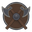

Поиск или адрес
Заблокировано за всё время 1 284
Отправлено о вас 0

Новая вкладкаЩит слева в адресной строке — он же знак защищённого соединения, как в браузере: отдельного замка нет. По клику открывается панель защиты. Счётчик растёт в реальном времени, адресная строка показывает загрузку волной по нижней кромке. Наведите курсор на вкладки и кнопки: отклик на наведение и нажатие — часть интерфейса, а не украшение.
Сетка 24×24, обводка 1.6, рубленая геометрия — форма перекликается со скандинавскими линиями логотипа. Щит с диагональным крестом — прямая отсылка к скрещённым топорам. Набор генерируется скриптом из одного описания, поэтому иконки не могут разъехаться по стилю.